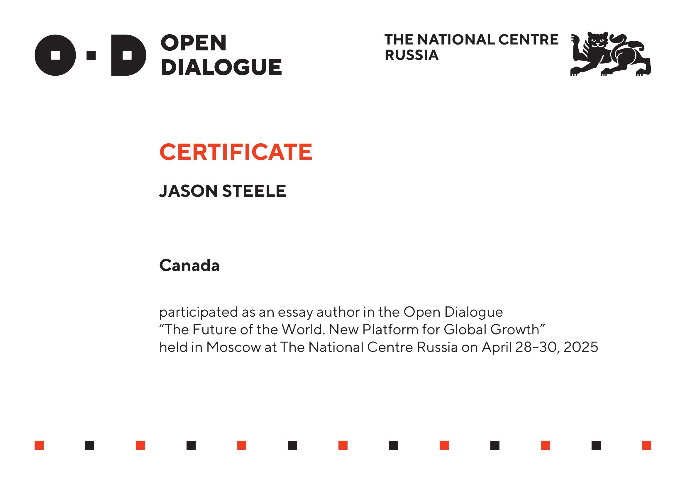

Reassessing Climate Science
Jason Steele
Presented at the Open Dialogue: "The Future of the World – A New Platform for Global Growth"
Moscow, Russia · April 28–30, 2025
“A new sun, a new science.”
Challenging outdated radiative models through experimental solar physics and material-based emission analysis.
The Case for Scientific Course Correction
This work proposes a paradigm shift in climate science: away from CO₂-centric models and toward empirically grounded frameworks that account for solar spectral variability, material-specific emissivity, and heliospheric drivers of climate dynamics.
Key Themes
- Reevaluating Kirchhoff’s Law: Demonstrates that emissivity is not universally uniform, undermining key assumptions in current climate models.
- Solar Forcing as Dominant: Presents observational correlations between solar cycles and historical climate shifts that surpass CO₂-based explanations.
- Empirical Over Model-Driven Forecasting: Advocates for climate models rooted in direct measurement and radiative physics, not theoretical idealizations.
- Funding Realignment: Suggests redirecting climate research investment toward heliophysics, radiative testing, and resilience science.
The essay outlines the scientific, environmental, and economic risks of relying on flawed radiative assumptions — and proposes a corrective path grounded in data, transparency, and cross-disciplinary research.
Participation Certificate
